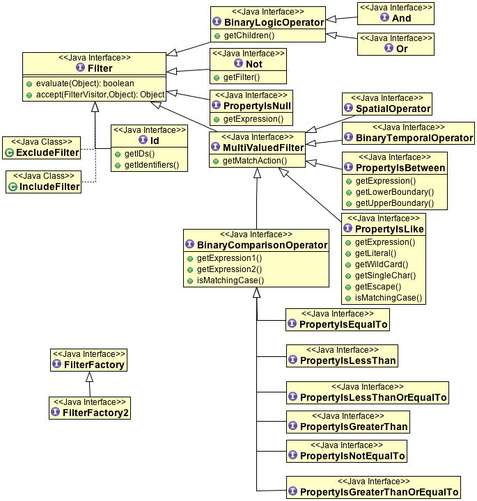
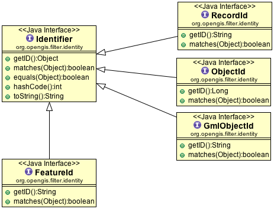
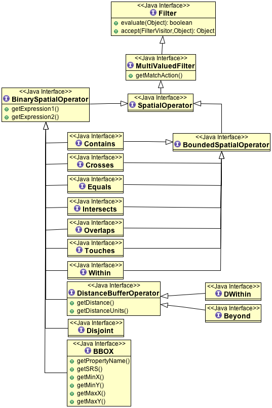
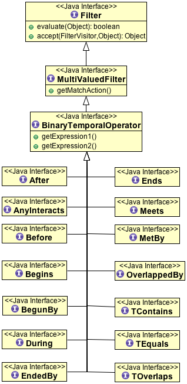
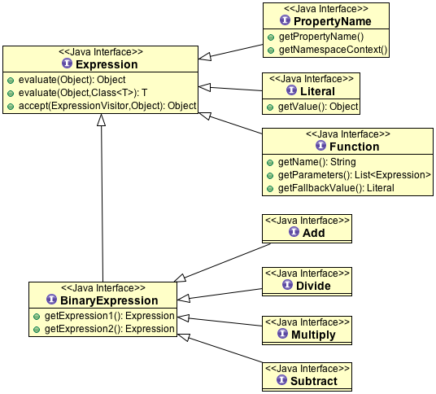
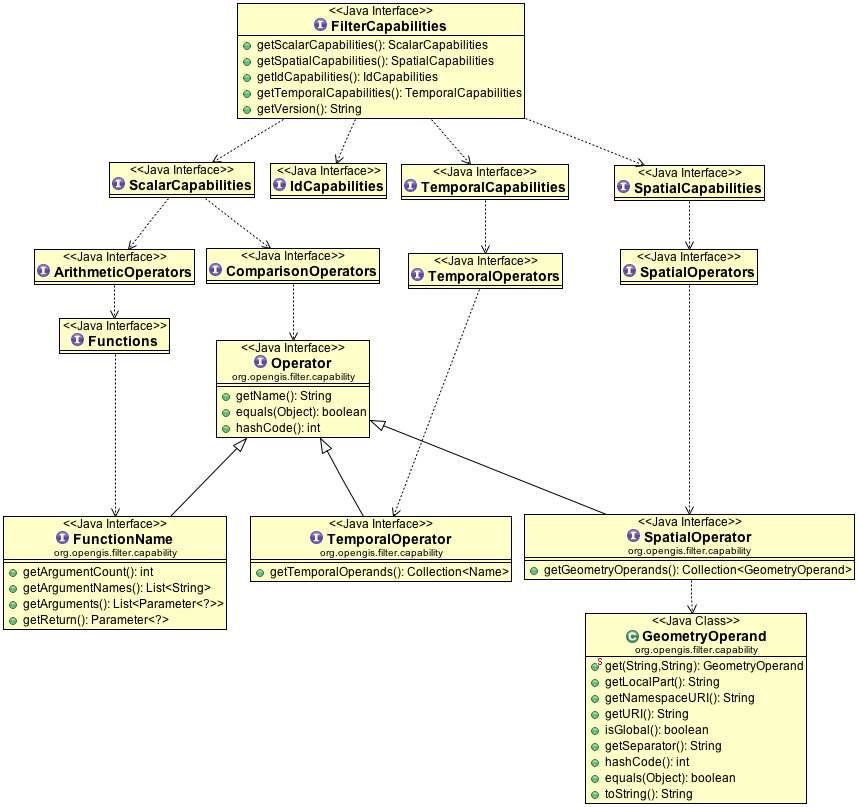

Filter¶
The filter api defines the first step of a Query, it is used when requesting data from a DataStore or Catalog. The Filter specification itself is maintained by the OGC and is used in a number of their specifications (Catalog, WFS, and so on).
In practice Filter is used to select features that are of interest and the Expression to drill in and access information.
Although this forms a closed set of classes (for interoperability), you can extend the system with your own functions.
References:
- http://www.opengeospatial.org/standards/filter
- gt-main filter detailed code examples
- gt-xml documentation
- gt-cql documentation
Introduction¶
The Filer specification defines a the filter data structure used to perform selection. A subset of this data structure is used to define expressions to define, calculate or extract information.
Here is an example of using filter and expression together:
final FilterFactory ff = CommonFactoryFinder.getFilterFactory(); Filter filter = ff.propertyLessThan( ff.property( "AGE"), ff.literal( 12 ) ); SimpleFeatureCollection features = featureSource.getFeatures( filter ); features.accepts( new FeatureVisitor<SimpleFeature>() ){ public void visit( SimpleFeature feature ){ Expression expression = ff.property( "NAME" ); String name = expression.evaulate( feature, String.class ); System.out.println( feature.getID() + " is named: "+ name ); } }, null );There are a couple other ways to access feature content:
- You can construct a filter or expression using the common query language
- You can construct a filter or expression from XML
- You can access the feature data structure directly
Here is the same example using common query language and direct feature access:
Filter filter = CQL.toFilter( "AGE < 12 " ); SimpleFeatureCollection features = featureSource.getFeatures( filter ); features.accepts( new FeatureVisitor<SimpleFeature>() ){ public void visit( SimpleFeature feature ){ String name = feature.getAttribute("NAME"); System.out.println( feature.getID() + " is named: "+ name ); } }, null );You can also make use of a filter “by hand” evaluate against a Feature to test if it is:
- TRUE: included in the set; or
- FALSE: excluded from the set
Here is an example of how to evaluate a feature using a filter:
if( filter.evaluate( feature ) ){ // the feature was "selected" by the filter System.out.println( "Selected "+ feature.getId(); }Filters in GeoTools are very forgiving:
Values don’t have to be exactly the right type.
GeoTools providers a Converters utility class to “type morph” objects into the required class.
What this means is you can mix and match types and not worry:
// the following should be considered equal filter = ff.equals( ff.literal("123"), ff.literal(123) );You can use this facility yourself to automatically ask expressions to evaluate to the kind of object you need.:
Expression expression = ff.literal("#FFFFFF"); Color color = expression.evaluate( feature, Color.class );You can also use a Filter on normal Java objects (ie POJOs)
If you are willing to write custom code you can define your own PropertyAccessor to teach filters how to work with your own data structures
Filter¶
The filter interface itself is designed to test set membership. That sounds dry - but it is accurate. A filter is used to test features one at a time to determine what you want returned to you. Being a spatial standard the tests are often spatial in nature (like intersects, bounding box).
You can think of Filter as similar to an SQL WHERE clause.
Not Object Oriented
A common mistake for programmers to make is to assume that you can implement Filter in order to define a custom filter.
The set of filter interfaces understood by the system is strictly limited to those defined by the Filter specification.
All hope is not lost - you can define your own custom Functions.
CQL¶
The common query language is a standard that appeared as part of the OGC Catalog specification. It defines an text syntax similar to SQL for defining Filters.:
Filter filter = CQL.toFilter("attName >= 5");
Expression percent = CQL.toExpression("ratio * 100");
In addition to the base standard the GeoTools community has allowed for a couple of extensions available using the ECQL class:
Filter filter = ECQL.toFilter("area( SHAPE ) BETWEEN 10000 AND 30000");
In this case the idea of comparing an area expression is an extension as the base CQL specification only allows property values to be compared.
FilterFactory¶
By using the FilterFactory you can create objects by hand. The FilterFactory interface is limited to strict specification compliance.:
FilterFactory ff = CommonFactoryFinder.getFilterFactory( GeoTools.getDefaultHints );
Filter filter = ff.propertyLessThan( ff.property( "AGE"), ff.literal( 12 ) );
FilterFactory2¶
In the real world we need to go beyond the specification. FilterFactory2 will let you work with JTS Geometry instances (the specification is only defined to work with ISO Geometry).:
FilterFactory2 ff = CommonFactoryFinder.getFilterFactory2( GeoTools.getDefaultHints );
Filter filter = ff.contains( ff.property( "THE_GEOM"), ff.literal( geometry ) );
FilterFactory2 also let’s you define your filters in a bit more of a free form manner. In the specification all operations must have the PropertyName expression first.
XML¶
Remember that Filter is a standard? Well it actually is an XML standard with documents that look like this:
<ogc:Filter xmlns:ogc="http://www.opengis.net/ogc" xmlns:gml="http://www.opengis.net/gml">
<ogc:PropertyIsGreaterThanOrEqualTo>
<ogc:PropertyName>attName</ogc:PropertyName>
<ogc:Literal>5</ogc:Literal>
</ogc:PropertyIsGreaterThanOrEqualTo>
</ogc:Filter>
To parse an xml stream:
Configuration configuration = new org.geotools.filter.v1_0.OGCConfiguration();
Parser parser = new Parser( configuration );
Filter filter = (Filter) parser.parse( inputStream );
To parse a DOM fragment:
InputSource input = new InputSource( reader );
DocumentBuilderFactory dbf = DocumentBuilderFactory.newInstance();
DocumentBuilder db = dbf.newDocumentBuilder();
Document dom = db.parse( input );
Filter filter = null;
// first grab a filter node
NodeList nodes = dom.getElementsByTagName("Filter");
for (int j = 0; j < nodes.getLength(); j++) {
Element filterNode = (Element) nodes.item(j);
NodeList list = filterNode.getChildNodes();
Node child = null;
for (int i = 0; i < list.getLength(); i++) {
child = list.item(i);
if ((child == null) || (child.getNodeType() != Node.ELEMENT_NODE)) {
continue;
}
filter = FilterDOMParser.parseFilter(child);
}
}
System.out.println( "got:"+filter );
For more information, including examples for other versions of the filter specification, please review the gt-xml filter documentation.
Basic¶
The core filter abstractions are here. This set of interfaces is closed (you cannot make a new filter class and expect it to work).
Comparison¶
The heart of the filter data model is property comparisons; these filters allow you to test the attributes of your feature and select out only those features that match:
FilterFactory2 ff = CommonFactoryFinder.getFilterFactory2();
Filter filter;
// the most common selection criteria is a simple equal test
ff.equal(ff.property("land_use"), ff.literal("URBAN"));
// You can also quickly test if a property has a value
filter = ff.isNull(ff.property("approved"));
// The usual array of property comparisons is supported
// the comparison is based on the kind of data so both
// numeric, date and string comparisons are supported.
filter = ff.less(ff.property("depth"), ff.literal(300));
filter = ff.lessOrEqual(ff.property("risk"), ff.literal(3.7));
filter = ff.greater(ff.property("name"), ff.literal("Smith"));
filter = ff.greaterOrEqual(ff.property("schedule"), ff.literal(new Date()));
// PropertyIsBetween is a short inclusive test between two values
filter = ff.between(ff.property("age"), ff.literal(20), ff.literal("29"));
filter = ff.between(ff.property("group"), ff.literal("A"), ff.literal("D"));
// In a similar fashion there is a short cut for notEqual
filter = ff.notEqual(ff.property("type"), ff.literal("draft"));
// pattern based "like" filter
filter = ff.like(ff.property("code"), "2300%");
// you can customise the wildcard characters used
filter = ff.like(ff.property("code"), "2300?", "*", "?", "\\");
Null vs Nil¶
A related topic to comparing a property value is testing to see if a property has a value at all. In the simple case PropertyIsNull can be used to check that a property exists; and that the value is empty.
We also have the situation where a property is allowed to occur zero or many times; in this case we want a nice clear way to check that a Property does not exsit at all (that is occure = zero).
FilterFactory2 ff = CommonFactoryFinder.getFilterFactory2();
Filter filter;
// previous example tested if approved equals "null"
filter = ff.isNull(ff.property("approved"));
// this example checks if approved exists at all
filter = ff.isNil(ff.property("approved"),"no approval available");
MatchCase¶
By default property comparison is case sensitive; you can override this default when constructing your filter as shown below.
FilterFactory2 ff = CommonFactoryFinder.getFilterFactory2();
// default is matchCase = true
Filter filter = ff.equal(ff.property("state"), ff.literal("queensland"));
// You can override this default with matchCase = false
filter = ff.equal(ff.property("state"), ff.literal("new south wales"),
false);
// All property comparisons allow you to control case sensitivity
Filter welcome = ff.greater(ff.property("zone"), ff.literal("danger"),
false);
This capability was added by the Filter 1.1 specificaiton.
MatchAction¶
All filters that implement the MultiValuedFilter interface, support filtering on operands that return multiple values on evaluation. The way these filters handle multiple values can be modified through the ‘MatchAction’ property.
The property can be retrieved through a simple getter:
filter.getMatchAction()
MatchAction has three possible values:
MatchAction.ANY
When no MatchAction is specified, it is set to the default MatchAction.ANY.
Evaluates to true if any possible combinations of operands evaluates to true:
List<Integer> ages = Arrays.asList(new Integer[] { 7, 8, 10, 15 }); filter = ff.greater(ff.literal(ages), ff.literal(12), false, MatchAction.ANY); System.out.println("Any: " + filter.evaluate(null)); // prints Any: true
MatchAction.ALL
Evaluates to true if all possible combinations of operands evaluates to true.:
List<Integer> ages = Arrays.asList(new Integer[] { 7, 8, 10, 15 }); filter = ff.greater(ff.literal(ages), ff.literal(12), false, MatchAction.ALL); System.out.println("All: " + filter.evaluate(null)); // prints All: false
MatchAction.ONE
Evaluates to true if exactly one possible combination of values evaluates to true:
List<Integer> ages = Arrays.asList(new Integer[] { 7, 8, 10, 15 }); filter = ff.greater(ff.literal(ages), ff.literal(12), false, MatchAction.ONE); System.out.println("One: " + filter.evaluate(null)); // prints One: true
Multiple values are possible in a couple situations: when working with application schemas, or working directly with java objects. When an expression is evaluated against rich content of this nature child references may return a multi-valued attribue.
As an example this filter tests whether all children are older than 12:
filter = ff.greater(ff.property("child/age"), ff.literal(12), true,
MatchAction.ALL);
Logical¶
Filters can be combined using the usual binary logic of AND, OR and NOT.
// you can use *not* to invert the test; this is especially handy
// with like filters (allowing you to select content that does not
// match the provided pattern)
filter = ff.not(ff.like(ff.property("code"), "230%"));
// you can also combine filters to narrow the results returned
filter = ff.and(ff.greater(ff.property("rainfall"), ff.literal(70)),
ff.equal(ff.property("land_use"), ff.literal("urban"), false));
filter = ff.or(ff.equal(ff.property("code"), ff.literal("approved")),
ff.greater(ff.property("funding"), ff.literal(23000)));
INCLUDES and EXCLUDES¶
There are two constants defined that can be used as Sentinel objects (or placeholders). Both of them represent “I don’t have a Filter”, but they differ in what client code is supposed to do about it.
Filter.INCLUDES
All content is included in the set. Would return EVERYTHING if used in a Query.
Filter.EXCLUDES
Don’t include any content. Would return an empty Collection if used in a Query.
These values are often used as default values in other data structures - for example the default value for Query.getFilter() is Filter.INCLUDES.
These are static constants and do not require a constructor:
filter = Filter.INCLUDE; // no filter provided! include everything filter = Filter.EXCLUDE; // no filter provided! exclude everything
You can check for these values when optimising:
public void draw( Filter filter ){ if( filter == Filter.EXCLUDES ) return; // draw nothing Query query = new DefaultQuery( "roads", filter ); FeatureCollection collection = store.getFeatureSource( "roads" ).getFeatures( filter ); ... }However do be careful as it is easy to get confused.:
if( filter == Filter.INCLUDES || filter.evaluate( feature ) ){ System.out.println( "Selected "+ feature.getId(); }
Identifer¶
The other interesting way to use a filter to more as a “selection” in the GIS sense. In this case rather than evaluating the attributes we will directly match the FeatureId.
The most common test is against FeatureId:
FilterFactory2 ff = CommonFactoryFinder.getFilterFactory2(); Filter filter; filter = ff.id(ff.featureId("CITY.98734597823459687235"), ff.featureId("CITY.98734592345235823474"));
Formally this style of Id matching is not supposed to be mixed with the traditional attribute based evaluation (such as a bounding box filter).
You can also use a Set<FeatureId>:
FilterFactory2 ff = CommonFactoryFinder.getFilterFactory2(); Filter filter; Set<FeatureId> selected = new HashSet<FeatureId>(); selected.add(ff.featureId("CITY.98734597823459687235")); selected.add(ff.featureId("CITY.98734592345235823474")); filter = ff.id(selected);
The other place where identifiers are used are when working with versioned information. In this case a ResourceId is used that consists of both a “fid” and a “rid”.
ResourceId can be used to explore versioned information:
FilterFactory2 ff = CommonFactoryFinder.getFilterFactory2(); Filter filter; // grab a specific revision filter = ff.id( ff.featureId("CITY.98734597823459687235","A457") ); // You can also use ResourceId to grab a specific revision filter = ff.id( ff.resourceId("CITY.98734597823459687235","A457", new Version()) ); // grab the one before that filter = ff.id(ff.resourceId("CITY.98734597823459687235","A457",new Version(Action.PREVIOUS) )); // grab the one after that filter = ff.id(ff.resourceId("CITY.98734597823459687235","A457",new Version(Action.NEXT) )); // grab the first one filter = ff.id(ff.resourceId("CITY.98734597823459687235","A457",new Version(Action.FIRST) )); // grab the first one (ie index = 1 ) filter = ff.id(ff.resourceId("CITY.98734597823459687235","A457",new Version(1) )); // grab the twelfth record in the sequence (ie index = 12 ) filter = ff.id(ff.resourceId("CITY.98734597823459687235","A457",new Version(12) )); // Grab the entry close to Jan 1985 DateFormat df = DateFormat.getDateInstance( DateFormat.SHORT ); df.setTimeZone(TimeZone.getTimeZone("GMT")); filter = ff.id(ff.resourceId("CITY.98734597823459687235","A457",new Version(df.parse("1985-1-1")))); // Grab all the entries in the 1990s filter = ff.id(ff.resourceId("CITY.98734597823459687235",df.parse("1990-1-1"),df.parse("2000-1-1")));
Spatial¶
Spatial filters are also available.
Here is a quick example showing how to request features within a bounding box.
FilterFactory2 ff = CommonFactoryFinder.getFilterFactory2();
ReferencedEnvelope bbox = new ReferencedEnvelope(x1, x2, y1, y2, DefaultGeographicCRS.WGS84 );
Filter filter = ff.bbox(ff.property("the_geom"), bbox);
Please review the gt-main filter examples for examples of using spatial filters.
Temporal¶
Temporal filters have been recently defined by the Filter 2.0 specification and are a new addition for GeoTools 8.0.
The gt-main module supplies some of the implementation classes we will need:
- DefaultIntant: this is an implementation of Instant used to represent a single point in time.
- DefaultPeriod: this is an implementation of Period used to reresent a range in time
Here is an example illustrating their construction and use with temporal filters:
// use the default implementations from gt-main
DateFormat FORMAT = new SimpleDateFormat("yyyy-MM-dd'T'HH:mm:ss.SSSZ");
Date date1 = FORMAT.parse("2001-07-05T12:08:56.235-0700");
Instant temporalInstant = new DefaultInstant(new DefaultPosition(date1));
// Simple check if property is after provided temporal instant
Filter after = ff.after(ff.property("date"), ff.literal(temporalInstant));
// can also check of property is within a certain period
Date date2 = FORMAT.parse("2001-07-04T12:08:56.235-0700");
Instant temporalInstant2 = new DefaultInstant(new DefaultPosition(date2));
Period period = new DefaultPeriod(temporalInstant, temporalInstant2);
Filter within = ff.toverlaps(ff.property("constructed_date"),
ff.literal(period));
Expression¶
Many of the filters mentioned above are presented as a comparison between two (or more) expressions. Expressions are used to access data held in a Feature (or POJO, or Record, or ...).
The core expression abstractions are here - this set is open in that you can define new functions.
You evaluate an expression against a feature:
Object value = expression.evaluate( feature );
Or against a Java Bean, or even java.util.Map:
Object value = expression.evaluate( bean );
Out of the box expression is typeless, and will do its best to convert the value to the type required.
To do this yourself you can evaluate with a specific type of object in mind:
Integer number = expression.evaulate( feature, Integer.class );
As an example of conversion here is an expression converting a String to a Color:
Expression expr = ff.literal("#FF0000")
Color color = expr.evaualte( null, Color.class );
Expressions are so useful that you will see them pop up in many parts of GeoTools. They are used by styles to select which data for portrayal and so forth.
PropertyName
The PropertyName expression is used to extract information from your data model.
The most common use is to access a Feature Property.:
FilterFactory2 ff = CommonFactoryFinder.getFilterFactory2( GeoTools.getDefaultHints ); Expression expr = ff.property("name"); Object value = expr.evaluate( feature ); // evaluate if( value instanceof String){ name = (String) value; } else { name = "(invalid name)"; }You can also ask for the value specifically as a String, null will be returned if the value cannot be forced into a String:
FilterFactory2 ff = CommonFactoryFinder.getFilterFactory2( GeoTools.getDefaultHints ); Expression expr = ff.property("name"); String name = expr.evaluate( feature, String ); // evaluate if( name == null ){ name = "(invalid name)"; }X-Paths and Namespaces
It is possible to use X-Path expressions in filters. This is particularly useful for evaluating nested properties against complex features. To evaluate X-path expressions, an org.xml.sax.helpers.NamespaceSupport object is needed to associate prefixes with Namespace URI’s.
FilterFactory2 supports the creation of PropertyName expression with associated Namespace context information.:
FilterFactory2 ff = CommonFactoryFinder.getFilterFactory2( GeoTools.getDefaultHints ); NamespaceSupport namespaceSupport = new NamespaceSupport(); namespaceSupport.declarePrefix("foo", "urn:cgi:xmlns:CGI:GeoSciML:2.0" ); Filter filter = ff.greater(ff.property("foo:city/foo:size",namespaceSupport),ff.literal(300000));Namespace context information can be retrieved from an existing PropertyName expression:
PropertyName propertyName = ff.property("foo:city/foo:size", namespaceSupport); NamespaceSupport namespaceSupport2 = propertyName.getNamespaceContext(); // now namespaceSupport2 == namespaceSupport !PropertyName.getNamespaceContext() will return null when the PropertyName expression does not contain or does not support Namespace context information.
Functions
You can create functions using FilterFactory2:
FilterFactory2 ff = CommonFactoryFinder.getFilterFactory2( GeoTools.getDefaultHints ); PropertyName a = ff.property("testInteger"); Literal b = ff.literal( 1004.0 ); Function min = ff.function("min", a, b );For functions that take more than a couple parameters you will need to use an Array:
FilterFactory ff = CommonFactoryFinder.getFilterFactory(null); PropertyName property = ff.property("name"); Literal search = ff.literal("foo"); Literal replace = ff.literal("bar"); Literal all = ff.literal( true ); Function f = ff.function("strReplace", new Expression[]{property,search,replace,all});What can you do when a Function is not found - creating the Function will fail!
The Symbology Encoding 2.0 specification has the concept of a fallbackValue - while we have not made it available via the factory yet you can use the FunctionFinder.:
FunctionFinder finder = new FunctionFinder(null); finder.findFunction("pi", Collections.emptyList(), ff.literal(Math.PI));Please note that the literal value provided above is only used when the expression is evaluated in context of a service that does not support the pi() function.
FilterVisitor¶
FilterVisitor is used to traverse the filter data structure. Common uses include:
- Asking questions about the content of a Filter
- Performing analysis and optimisations on a Filter (say replacing “1+1” with “2” )
- Transforming the filter (think search and replace)
All of these activities have something in common:
- the contents of the Filter need to be examined
- a result or answer needs to be built up
Here is a quick code example showing the use of a visitor to traverse the data structure:
// The visitor will be called on each object
// in your filter
class FindNames extends DefaultFilterVisitor {
public Set<String> found = new HashSet<String>();
/** We are only interested in property name expressions */
public Object visit( PropertyName expression, Object data ) {
found.add( expression.getPropertyName() );
return found;
}
}
// Pass the visitor to your filter to start the traversal
FindNames visitor = new FindNames();
filter.accept( visitor, null );
System.out.println("Property Names found "+visitor.found );
For more examples please see gt-main where several visitors are defined for your use.
FilterCapabilities¶
GeoTools is very good about ensuring that your Filters and Expressions perform as expected; however it will do what you say (even at a great cost to performance!). Different web services and databases have different native capabilities. For any functionality that cannot be provided natively GeoTools will perform the work locally in Java. Indeed for simple file formats almost everything occurs locally in Java.
The FilterCapabilities data structure is used to describe the native abilities of a WebFeatureService. We also use this data structure to describe the abilities of the different JDBC DataStores for working with Databases. Of special interest is the list of FunctionNames supported.
This data structure is not commonly used in day to day GeoTools work; it is mostly of interest to those implementing support for new web or database services.